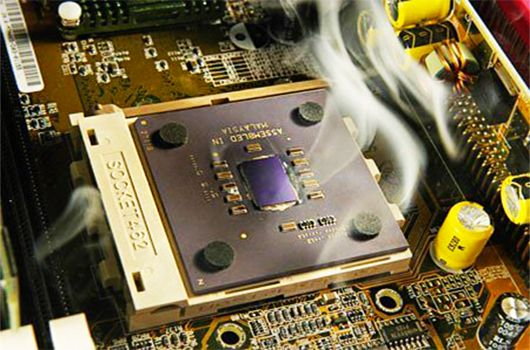
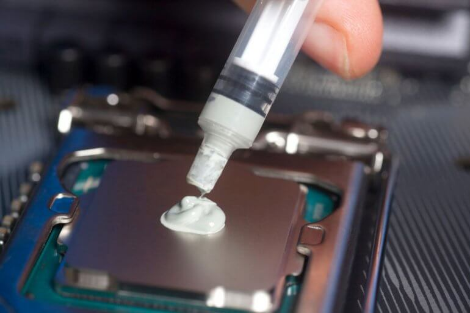

¿Por qué se dan los Pantallazos azules o BSOD?
Los Pantallazos azueles tambien conocidos como BSOD "Blue Screen of Death" cuya traducción seria Pantalla azul de la muerte, este no se motivo para asustarce estos son errores que se dan cuando el sistemr detecta algun error, estos se puede dar por errores del Software como por errores de Hardware como:
 r
r
Errores del Software
Los erroes que causan esto son principalmente errores de Actualización de Drivers o Actialización del propio sistema operativo, esto se puede solucionar usando la Herramienta de Windows Update
Tambinen puede ser que tu computador tenga algun malware que sea el cual este ocacionando esto, esto se solucionaria formateando nuestro equipo, pero por lo general son solo errores de actualización de drivers o problemas relacionados con el Hardware.
Errores del Hardware
Los errores del hardware que ocasionan estos pantallazos azules por lo general son problemas en la memoria RAM o en el Disco Duro, sobrecalentamiento del procesador.

Colocar Pasta termica
¿Qué es la pasta termica?
Es un conductor de calor que puede ser aplicada entre dos o más componentes que no poseen una conexión directa . Ya que permite la disipación de calor evitando que estos componentes se sobrecalienten entre sí

¿Cómo colocar pasta termica?
Para colocar la pasta termica tendremos que retirar el disipador del procesador y procedermos a colocar la pasta termica sobre el procesador procurar poner una cantidad no muy exagerada para evitar que esta se derrame alrededor del mismo pero la suficiente para cubrir la mayoria del procesador, una de las mejores maneras de colocarla en colocando una cantidad similar a un grano de arroz en el centro asi este queda cubierto casi en su mayoria si que esta se derrame.

Recvisar las pastillas de memoria RAM
Una vez colocada la pasta termicahemos resuelto el problema del sobrtecalentamiento, pero tambien tenemos que revisar la memoria RAM de nuestro computador pues esta puede estar presentando algunos problemas, por lo general basta con reirar la memoria RAM y dar lipieza tanto al puerto donde esta se aloja como a la memoria RAM en sí, para limpiar los pines de la memoria RAM basta con pasar un borrador por estos con suma precaución y para limpiar el puerto podemos limpiarlo con el aire comprimido así como usando una de nuestras brochas antiestaticas.
Para retirar la memoria RAM hay que ser muy cuidadosos al manejar esta, primero deberemos tener nuestra pulsera alntiestatica coilocada y deberesmos alzar los seuritos que sostienen a la memoria RAM luego de esto retiramos la memoria para su limpieza, al momento de colocarla deberemos asegurarnos de que los seguros estan alzados y una vez que estos esten alzados colocamos la memoria empujando esta hacia abajo hasra que los seguros se coloquen en su lugar.
Si la memoria RAM tiene indicios de haberse dañadoes mejor retirarla y colocar una nueva pastilla RAM.
Malware o Virus
Estos pantallazos azules se pueden dar por la presencia de virus en tu equipo, realiza unn escaneo con un antivirus confiable como ESET, Panda o AVAST que sonlos más cotizados en el mercado, hay que realizar un examen de tu equipo con cualquiera de estos si si es necesario se tomran las acciones necesarias, tambien se puede dar que el antivirus este ocacionando estos pantallazos azules para comprabarlo puedes desactivar tu antivitus por algún tiempo para comprobar si esto es lo que ocaciona estos problemas.